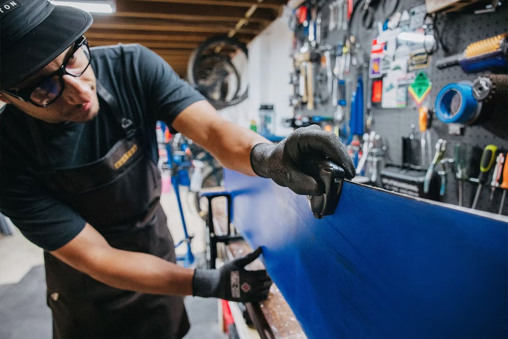
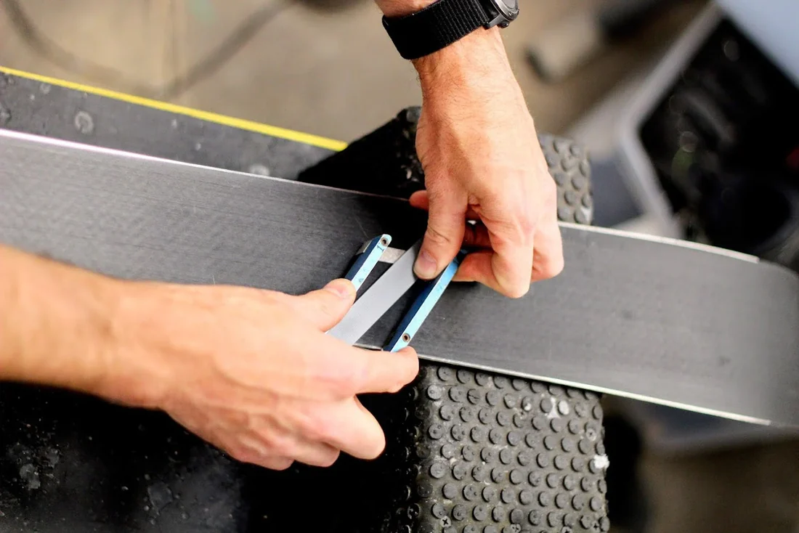
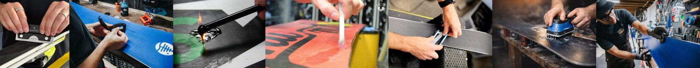
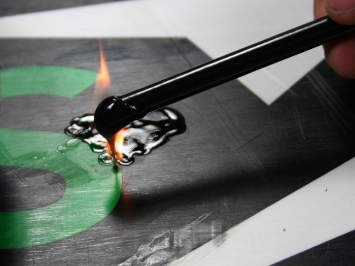
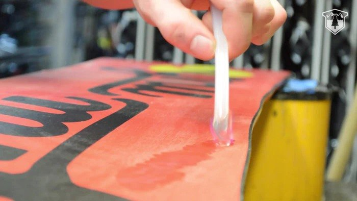

Wax & verzorging
Ski€ 19,95
Snowboard€ 24,95
- Warme waxbeurt
- Afkoelen en afschrapen
- Uitborstelen en finish
Gericht onderhoud, zorgvuldig uitgevoerd. We behandelen wat nodig is en kiezen niet automatisch voor de meest ingrijpende bewerking.
Je hoeft vooraf geen expert te zijn. Wij controleren het materiaal altijd nog voordat we starten.
Alle pakketten zijn helder opgebouwd. Blijkt bij controle dat iets anders verstandiger is, dan nemen we eerst contact op.
Losse behandelingen zijn ook mogelijk wanneer een volledig pakket niet nodig is.
Machinaal vlakslijpen is soms precies de juiste behandeling. Maar omdat daarbij ook belagmateriaal wordt verwijderd, maken we het niet automatisch onderdeel van iedere beurt.
We beoordelen eerst de staat van je ski of snowboard. Daarna kiezen we gericht voor kantenonderhoud, structuur, wax en finish. Zo krijgt je materiaal de behandeling die het nodig heeft — niet meer en niet minder.
Goed onderhoud draait niet alleen om vandaag lekker skiën, maar ook om langer plezier van je materiaal.


Wax wordt verwarmd en over het belag verdeeld. Na afkoelen verwijderen we de overtollige wax en borstelen we het oppervlak uit. Zo wordt het belag verzorgd en neemt de weerstand met de sneeuw af.
Stalen kanten worden door gebruik bot en kunnen bramen krijgen. Gericht slijpen en tunen zorgt voor meer grip en controle, vooral op harde of ijzige pistes.
Fijne groeven helpen vocht onder ski of snowboard af te voeren. Waar passend frissen we de structuur gericht op zonder onnodig veel materiaal te verwijderen.
Onder een glijdende ski ontstaat een microscopisch dun waterfilmpje. Bij koude sneeuw speelt droge wrijving een grotere rol; bij warmere sneeuw kan vocht juist extra remmen.
Een goed gewaxte basis vermindert die weerstand. De structuur helpt het vocht af te voeren. Samen zorgen ze voor soepeler glijden.

Onze huidige reparatieservice is bedoeld voor oppervlakkige krassen, kleine lokale beschadigingen en eenvoudige P‑Tex-herstellingen die zonder constructieve ingreep kunnen worden uitgevoerd.
Oppervlakkige krassen, kleine beschadigingen en eenvoudige lokale P‑Tex-vullingen.
Diepe kernschade, schade aan of vlak langs de staalkant, loszittende/verbogen kanten en delaminatie vallen voorlopig buiten onze reparatieservice.
Twijfel je over een beschadiging? Stuur bij je aanvraag een foto mee. We beoordelen eerst wat verstandig is.


Naast onderhoud hebben we een beperkt eigen verhuuraanbod. De exacte lengtes, schoenmaten en tarieven voegen we binnenkort toe. Je kunt nu al een aanvraag doen.
Maten en samenstelling worden nog ingevuld. We zoeken bij aanvraag de best passende set.
Verschillende lengtes. De exacte specificaties worden later op de site toegevoegd.
Beschikbaar als aanvulling op een set of losse ski's.
Voor onderhoud halen we je ski’s of snowboard op vrijdag, zaterdag of zondag. Je materiaal gaat mee in de onderhoudsronde en wordt het daaropvolgende weekend weer teruggebracht.
De service is gratis binnen ons servicegebied in regio Maas & Waal. Buiten het standaardgebied bekijken we graag wat mogelijk is.
Plan je ophaalmomentTwijfel je, dan beoordelen we het materiaal eerst. We adviseren wat past bij de staat van je ski of snowboard en voeren geen extra werkzaamheden uit zonder overleg.
Vlakslijpen verwijdert materiaal. Soms is dat nodig en dan is het een goede behandeling, maar we willen het niet automatisch bij iedere beurt doen. Waar mogelijk kiezen we voor gerichter onderhoud.
Dat hangt af van sneeuwsoort, temperatuur, aantal skidagen, rijstijl en type belag. Een warme waxbeurt is bedoeld als verzorgde basis voor je wintersport; later komt daar onze dagwax als snelle opfrisser bij.
Bij voorkeur wel. Zijn ze nog gemonteerd, dan kunnen we ze voor €7,50 demonteren en weer monteren.
We herstellen lichte, oppervlakkige belagschade en eenvoudige lokale P‑Tex-beschadigingen. Diepe kernschade, staalkantschade en constructieve reparaties nemen we voorlopig niet aan.
We halen in principe op vrijdag, zaterdag of zondag op en brengen het materiaal het daaropvolgende weekend weer terug. Afwijkende planning of spoed kan alleen in overleg.
Na bevestiging van de afspraak ontvang je een Tikkie. Zo betaal je pas wanneer planning, pakket en eventuele extra werkzaamheden duidelijk zijn. Bij verhuur bevestigen we ook de huurprijs en eventuele aanvullende voorwaarden vooraf.
Je stelt hieronder je aanvraag samen. Daarna wordt er automatisch een duidelijk WhatsApp-bericht gemaakt met alle gegevens. Wij bevestigen daarna de afspraak, beschikbaarheid en betaling.